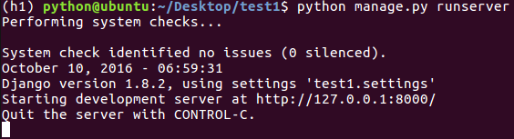

服务器
- 运行如下命令可以开启服务器
python manage.py runserver ip:port
- 可以不写ip，默认端口为8000
- 这是一个纯python编写的轻量级web服务器，仅在开发阶段使用
- 服务器成功启动后，提示如下信息

- 默认端口是8000，可以修改端口
python manage.py runserver 8080
- 打开浏览器，输入网址“127.0.0.1:8000”可以打开默认页面
- 如果修改文件不需要重启服务器，如果增删文件需要重启服务器
- 通过ctrl+c停止服务器
管理操作
- 站点分为“内容发布”和“公共访问”两部分
- “内容发布”的部分负责添加、修改、删除内容，开发这些重复的功能是一件单调乏味、缺乏创造力的工作。为此，Django会根据定义的模型类完全自动地生成管理模块
使用django的管理
- 创建一个管理员用户
python manage.py createsuperuser，按提示输入用户名、邮箱、密码
- 启动服务器，通过“127.0.0.1:8000/admin”访问，输入上面创建的用户名、密码完成登录
- 进入管理站点，默认可以对groups、users进行管理
管理界面本地化
- 编辑settings.py文件，设置编码、时区
LANGUAGE_CODE = 'zh-Hans'
TIME_ZONE = 'Asia/Shanghai'
向admin注册booktest的模型
- 打开booktest/admin.py文件，注册模型
from django.contrib import admin
from models import BookInfo
admin.site.register(BookInfo)
- 刷新管理页面，可以对BookInfo的数据进行增删改查操作
- 问题：如果在str方法中返回中文，在修改和添加时会报ascii的错误
- 解决：在str()方法中，将字符串末尾添加“.encode('utf-8')”
自定义管理页面
- Django提供了admin.ModelAdmin类
- 通过定义ModelAdmin的子类，来定义模型在Admin界面的显示方式
class QuestionAdmin(admin.ModelAdmin):
...
admin.site.register(Question, QuestionAdmin)
列表页属性
- list_display：显示字段，可以点击列头进行排序
list_display = ['pk', 'btitle', 'bpub_date']
- list_filter：过滤字段，过滤框会出现在右侧
list_filter = ['btitle']
- search_fields：搜索字段，搜索框会出现在上侧
search_fields = ['btitle']
- list_per_page：分页，分页框会出现在下侧
list_per_page = 10
添加、修改页属性
- fields：属性的先后顺序
fields = ['bpub_date', 'btitle']
- fieldsets：属性分组
fieldsets = [
('basic',{'fields': ['btitle']}),
('more', {'fields': ['bpub_date']}),
]
关联对象
对于HeroInfo模型类，有两种注册方式
- 方式一：与BookInfo模型类相同
- 方式二：关联注册
按照BookInfor的注册方式完成HeroInfo的注册
- 接下来实现关联注册
from django.contrib import admin
from models import BookInfo,HeroInfo
class HeroInfoInline(admin.StackedInline):
model = HeroInfo
extra = 2
class BookInfoAdmin(admin.ModelAdmin):
inlines = [HeroInfoInline]
admin.site.register(BookInfo, BookInfoAdmin)
- 可以将内嵌的方式改为表格
class HeroInfoInline(admin.TabularInline)
布尔值的显示
- 发布性别的显示不是一个直观的结果，可以使用方法进行封装
def gender(self):
if self.hgender:
return '男'
else:
return '女'
gender.short_description = '性别'
- 在admin注册中使用gender代替hgender
class HeroInfoAdmin(admin.ModelAdmin):
list_display = ['id', 'hname', 'gender', 'hcontent']